Project 5
Modelling, Simulating & Optimizing Formula SAE Chassis using SolidWorks & ANSYS
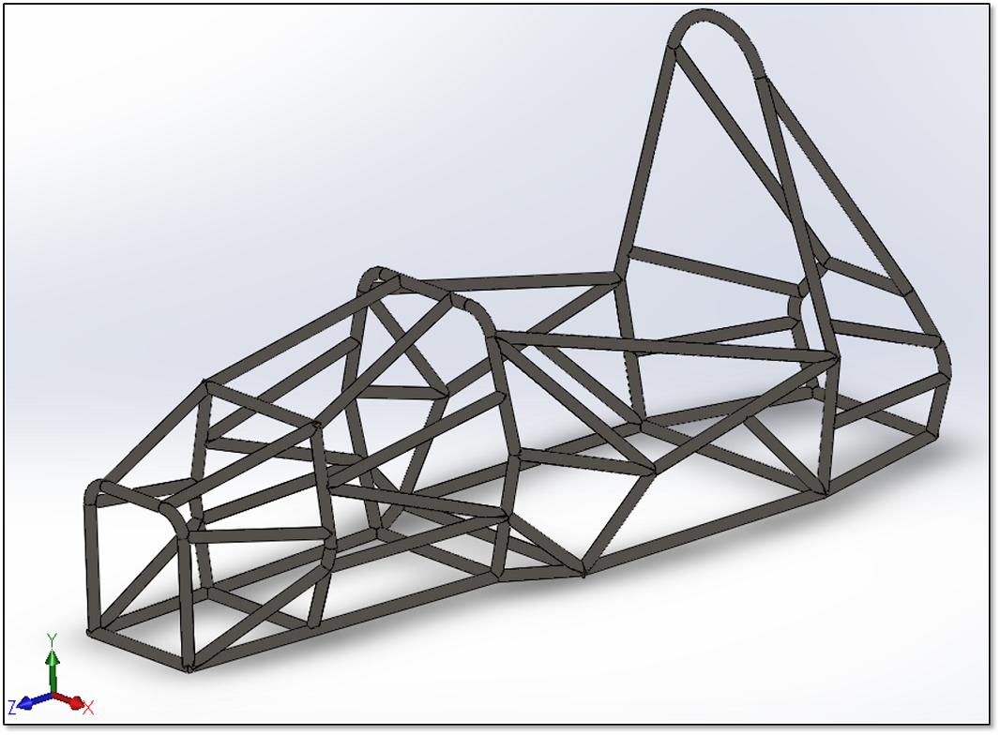
MOTIVATIOIN:
A chassis is considered as a mainstay of a vehicle. It provides strength to support all the sub-systems and payload
placed upon them along with the driver’s safety. The biggest challenge faced by automobile designers is to make an
aesthetic chassis design with maximum performance and material utilization. But the process gets highly complicated
when all the components are considered together to perform a crucial function. This project highlights the importance
of modelling and simulation methods to ensure a safe chassis design in a crash test scenario. The first phase of this
project concentrates on methodologies used for modelling a chassis. This section will introduce techniques to represent
a complex geometry model using Finite Element Methods. In the latter section, we will explore ways to analyse the model
for different static trials by imposing extreme crash conditions. Additionally, we will scrutinize the critical sections
of the model by using submodeling method. Upon examination of all the test results of complete design, this project will
aim at optimizing and redesigning the current chassis design without compromising the safety requirements. This study will
help us to get valuable insights regarding the parameters which could be considered to make an optimum and torsionally
rigid chassis helping drivers to improve ride quality, handling and stability.
MATERIALS AND METHODS:
Design Methodology: Based on the finite element analysis, there are three ways to represent a model based on the its complexity.
We always look for the one which are fast in computation and gives the accurate results. There are three classical ways by which
we can represent a model: Beam element (1-D line), Shell element (2-D plane) and Solid element (3-D solid).
For this analysis, we will model the chassis by beam elements. Once the modelling method is decided, we are good to proceed
with the sketching part. But before using any CAD software to make it, we must refer the FSAE rulebook to estimate the ballpark
vehicle configuration like wheelbase & track, height, driver’s cell requirements, suspension mounting points etc. Because any
deviation from the rulebook can cost us huge penalties. After the ballpark calculations, we can represent the chassis use
three-dimensional Computer-Aided Design software SolidWorks 2017 and can save the file as [dot]IGES format. A complete design is
shown below.
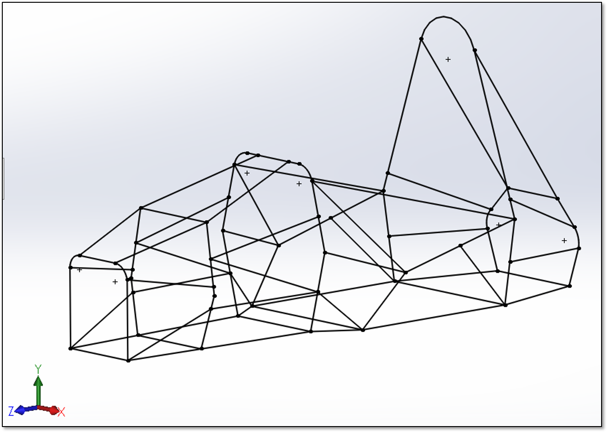
Saving file in IGES format may require some additional settings which are essential for exporting the beam element file in simulation
software. The important thing to remember is that it is not as easy to save a 3D line sketch as it looks. This might be a little tricky
process. We need some additional settings in SolidWorks under a save options. The process can be followed as:
Click on Save as > click on Save as type > Select IGES > click Options > Select Manifold
Solid (type - 186) in IGES solid / surface entities > Select B - Splines (Entity type - 126) >
Check Export Sketch entities > press OK > Save
MATERIAL SELECTION:
After saving the line sketch in IGES format, the systematic approach would be to choose a proper material. The chassis undergoes
various kinds of forces during the dynamic event. To stay intact without yielding, material plays a crucial role.
There are basically three choices of material available for the chassis. Mild steel, Drawn Over Mandrel (DOM) and Chromoly steel.
Mild steel tubing is 1010 or higher grade. This material is not so strong as compared to others but is acceptable with proper design.
DOM is 1018 up to 1026 grade. The higher the number, greater is the carbon content. 4130 chromoly steel is a true seamless tube, with
chromium and molybdenum added for strength and light weight. Also, this is available in wide variety of cross section which makes
easier for selection. The only disadvantage of AISI 4130 is that it is highly expensive and can be used only if the budget is high.
But the driver’s safety is of utmost important. Based on all these factors, we will go ahead with AISI 4130. Material comparison and
description based on their chemical, physical and mechanical properties can be seen below.
Steel is steel. If it processes like steel, it will perform like steel. Think of it - you don’t need to alter your
manufacturing design and processes to take weight out of your vehicle. Alternating material is the solution for this.
In the table 2, we can see the ultimate tensile strength of 4130 is high over 1018 which provides high strength to weight ratio.
Density is directly related to the mass. Additionally, machinability, chip formation and corrosion resistance are higher in 4130.
Referring to the FSAE rulebook, there are minimum tubing requirements which every vehicle must fulfil. At this moment, we
must decide which cross section to be assigned on the chassis parts. For this study, we have considered three different cross
section round tubes. A graphical representation can be seen in below for better visualization. Round tubes
of 1.0 in x 0.095 in for Main and Front Hoops (Red), 1.0 in x 0.065 in for Base frame, Side members, Front and Rear Bulk head
(Blue). For all the bracing support members, we have considered 1.0 in x 0.047 in. (Grey)
SIMULATION METHODOLOGY:
After the material selection, we are ready to perform different types of static on our model in ANSYS Workbench 18.2.
But before moving further, we should understand some basics of Finite Element formulations/ methods.
In real life engineering and physics problems, the design geometry gets more complex. To study the physical behaviour and performance
of these complex objects under loading conditions, we need some numerical methods for validifying the design. For this, Finite Element
Method (FEM) plays a crucial role where analytical solution is difficult to obtain. FEM discretizes a problem into small bodies
(finite element) which are connected by common points and creates a mathematical model to obtain the approximate the solutions
for boundary values problems. For this analysis, beam, shell and solid element could be used. Here, the choice of selecting the
type of element for analysis is completely one’s decision. A shell element is abstracted to 2D element which stores the third
dimension as a thickness on physical property table. While a beam element is abstracted to 1D element by storing the 2D cross
section as separate beam section property. Although, each level of extraction requires more preparation time, but reduces the
computational time since they allow modelling with fewer mesh elements as compared to the solid elements. In this study, for
long narrow structural members found in FSAE chassis, we will use the beam element as it is mainly for structural members.
Each beam element is defined by a straight-line connecting two joints at its end. ANSYS 18.2 uses Beam 188 element which is a
linear (2-node) with six degrees of freedom at each node. The degrees of freedom at each node include translations and rotation
in x, y, and z directions.
Now, to set up a beam element model of a chassis for the simulation in ANSYS 18.2, we need to export the IGES file and assign the
cross section to the line bodies in Geometry. The systematic approach to set the model up can be referred below:
Right click on Geometry Tab > Export > select IGES file > Open Design Modeler >
uncheck Solid bodies and Surface bodies in details of import > check line bodies >
click Generate
But before importing line sketch, we must create our material. Once it is done, the file can be imported in Design Modeler.
A complete guide for material selection and assigning cross section is mentioned in the next paragraph. The complete
model would look similar to the figure below after following all the steps.
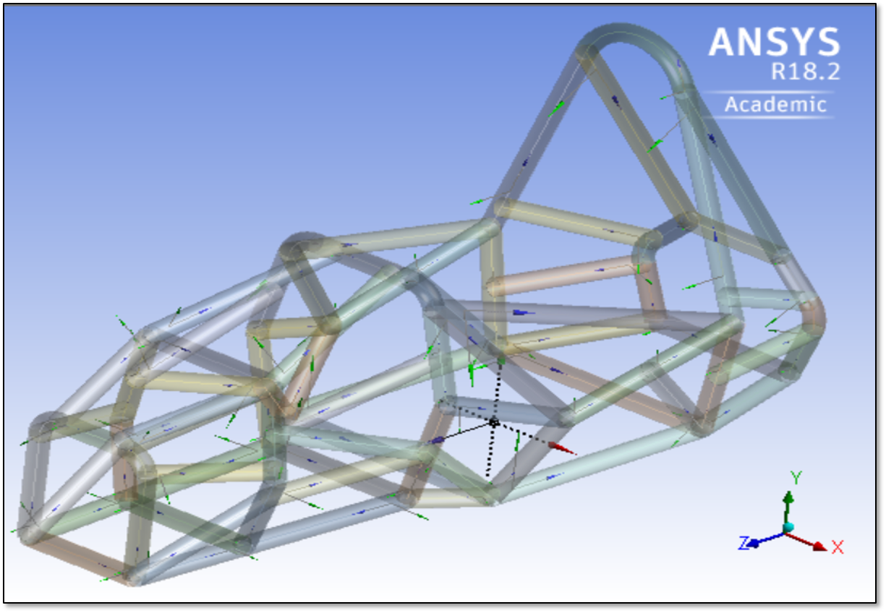
These steps would guide you to import the beam element chassis to ANSYS design modeler with some additional settings,
assign the desired cross section and the material to the frame. To initiate this, we will open a new ANSYS Workbench
and would drag a static structural type in Project Schematic. Next, we will click the Engineering data to assign the
material. AISI 4130 is not an inbuilt material and hence would need to do that. Referring to the material properties
table in the previous section, we can create the materials. After this, we would click on right click on the Geometry
tab. After this, go to concept and create three different circular tubes and assign the cross section which we decided
in the previous section. Assign the desired tube to each line body. On completion of this, select all the line bodies
and form a new part by a simple right click. Here we are ready with the model in ANSYS. These steps for setting up the
model is a general procedure and would be same for all types of analysis. After this, click on the Model (option 4) which
will initiate the Mechanical. We can now assign the material and check the weight by clicking on the definition of a part.
Click on the material assignment and select the AISI 4130 from the drop-down menu. we can check the model with circular tubes,
we can turn on the thick shells and beams option under the view tab.
Next, we would create the mesh on the model. Figure below shows the final mesh pattern on a chassis. As this is a beam element,
we don’t have much options to refine the mesh. After meshing, we would set all the boundary conditions before applying force
for testing.

To set the boundary conditions, we create named nodal selections to apply force and constraints. Nodal selection for forces
changes for every analysis type but remains same for constraints. In the figure below, nodal selection for force, which is
represented by (A) and nodal selections for front suspension points, represented by (B) are shown. We have selected every
node on the front section to distribute force equally. To apply constraints, we will fix both front and rear suspension
pick-up point. To constraint the motion and rotation in any direction, we will apply displacement and rotation boundary
condition which are presented in next figure.
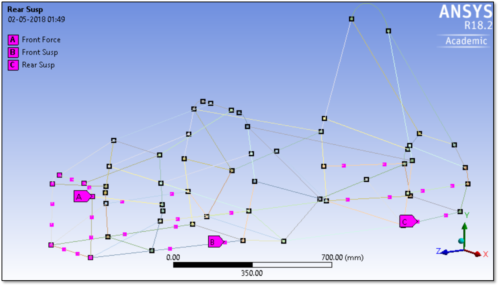
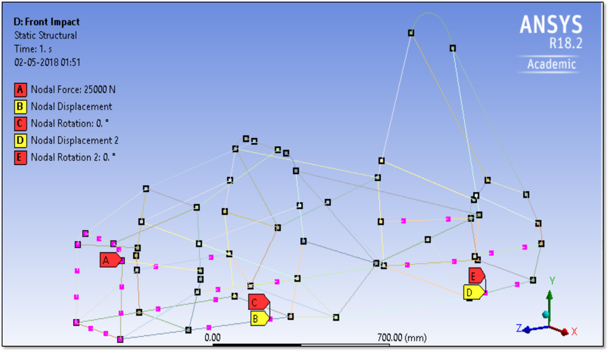
APPROACH:
During the dynamic state, the chassis experiences a lot of twisting, vibrations, shock, buckling and other variety of
stresses due to loads, forces, weight transfer etc. To overcome this, we can perform two types of analysis, i.e.; static
and dynamic analysis. Static analysis is done for the vehicle which is in the stationary position while the dynamic analysis
is done for the vehicle which is in motion.
Few points to note about the static and dynamic analysis are worth noticing. In static analysis, load applied is slowly which means
that the load frequency is smaller than the natural frequency. But in dynamic analysis, load applied is over some time or frequency.
Here the load frequency is in the range of natural frequency. Another point to note here is that the time and inertial effect are
irrelevant in static analysis but not in dynamic analysis. To perform the static analysis, we use the Static Structural options and
for analysis considering dynamic analysis, we use Explicit Dynamics option. As this is a beam element, dynamic analysis is not
applicable. It requires solid model only. There are seven types of static analysis:
1. Free – Run Modal Analysis: This is the primary test which is performed after assigning the cross-sections and material
to the chassis. The aim of this analysis is to check the line body connections. While sketching a 3D model in CAD software, there
might be a case where some lines lack proper connection with each other having some tolerance value. As the model is complex, we
might miss some of the fine details. To check this, we apply frequency from 0 to 1000 Hz and set number of mode shapes, say 20,
in modal analysis. Once we get the displacement results, we can create mode shapes by selecting the time duration. On evaluating
all those results, we would be able to see the joints which are not connected. We can list down all the unconnected members and
can connect them with the help of “connect” tool in ANSYS 18.2. This free run is a basic requirement before proceeding with static
and dynamic analysis. If the geometry is not properly corrected, we will not get exact results.
2. Front Impact Analysis: Once all the connections are made, the load will be calculated based on the weight of the vehicle
and the maximum velocity that it can achieve. A complete guide for calculations is mentioned below. Based
on these calculation, the load will be applied on the front most support members of the frame and the subsequent deflection and
stresses developed will be observed. We will apply constraints on the front and rear suspension mounting points. The deflection
of any of the members is not expected to be higher than 5-6 mm and the stress values should be such that a factor of safety is
obtained keeping in mind the reliability factor of the material. The subsequent design changes, if any, will be made and the
frame will be retested until the targets are met.

3. Rear impact test: This test is similar to the front impact test, just that it will be subjecting the rear most members
of the frame. Here too the deflection and stress values must fall under a specified level to pass muster. Especially in this test
since the rear members directly protect the most critical components of the vehicle the values must adhere to a strict limit.
4. Side impact test: In this test the vehicle will be tested for load bearing capacities in case of a sideways impact. Again,
this test is like the frontal or rear impact tests in methodology and intent. The frame will be subjected to a load on the side impact
members and the consequent deflections and stresses will be observed. As the side members of a frame is close to the driver, this test
is of utmost importance.
Modal analysis: This is the second modal analysis of this study. Vehicles will use Compressed Air shocks and is also
expected to face some rough terrains; thus, the vehicle frame is expected to be experience a lot of vibrations. These vibrations
can be varying in amplitude and frequency. Thus, it is important to check the dynamic response of the frame design or the
material or the weld used to the ensuing vibration induced disturbances. Also, since the frame will be covered with body
panels the need for modal analysis becomes ever so important.
Bump analysis: This type of analysis is usually not experienced by a racing car, but it is worth exploring the stress
and deformation during an extreme condition. Whenever a car passes over a bump, it is affected by an abrupt upward force in
the front section while the rear part remains unaffected.
Torsional analysis: This is one among the many basic loads that any vehicle is subjected to. This analysis become even more
important in the case of our vehicle since the turning of a car at high speed or undulating road surface compounds the situations
leading to torsional loads being applied on the vehicle body and such situations arise much more often. Thus, the torsional analysis
of the frame is very important. It calculates the deflection and the stresses induced in the frame due to torsional loads. For this
test the rear suspension mounting points will be fixed and the front mounting points will be subjected to the torsional loads.
RESULTS:
In this section, we will see the max. combined stress and total deformation results in tabular form. The graphical
representation for every analysis can also be seen below.
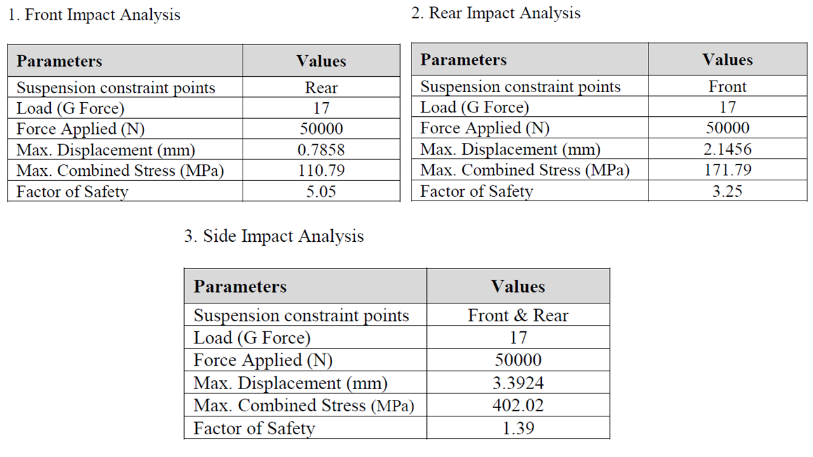
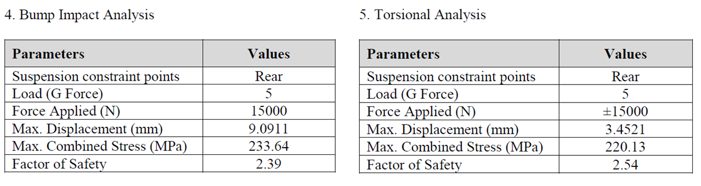

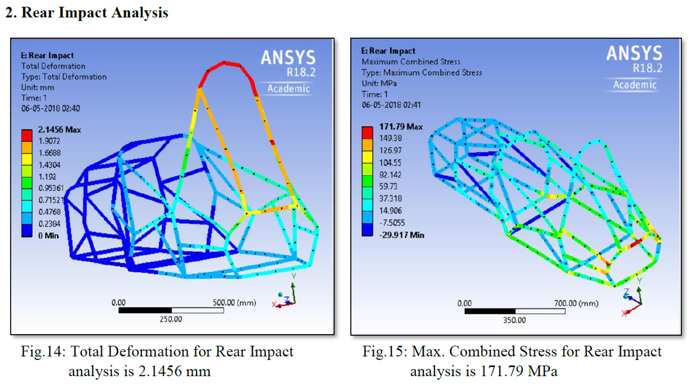
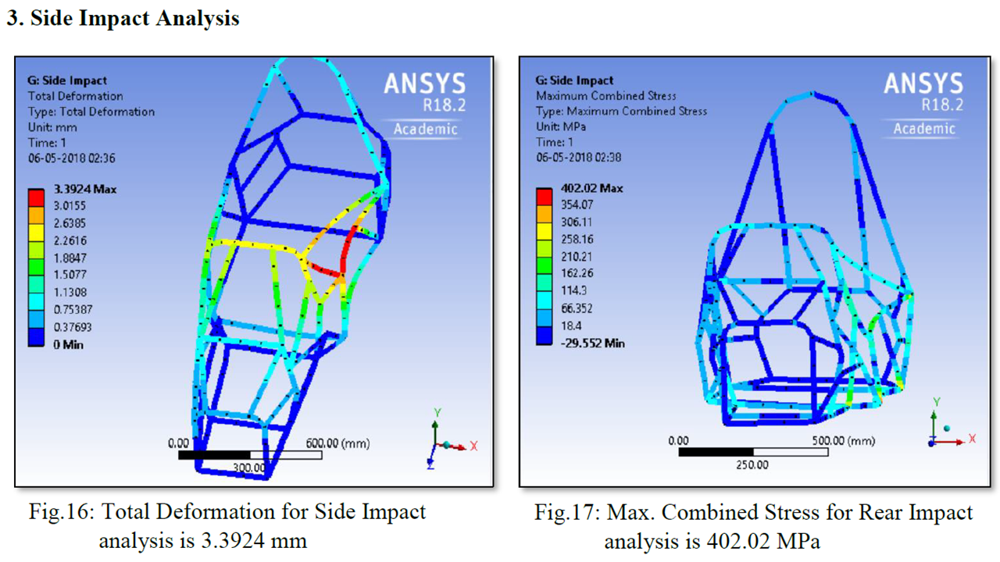
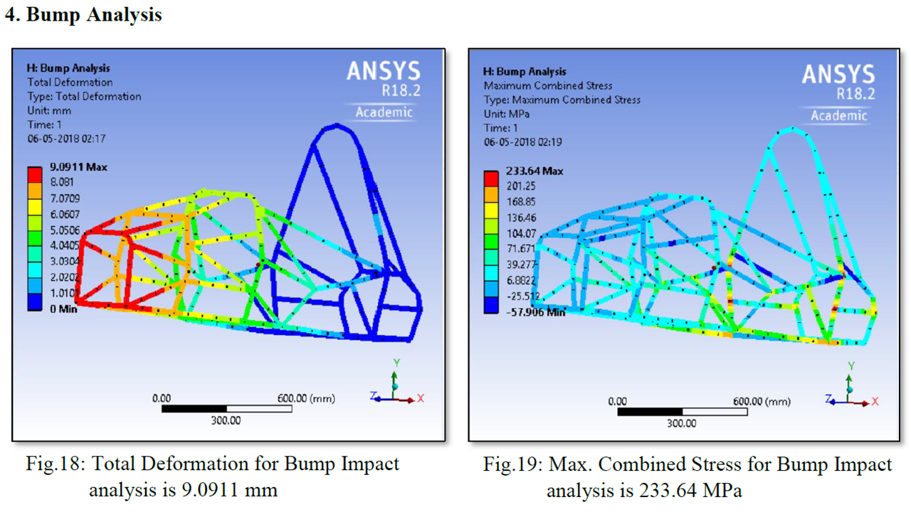

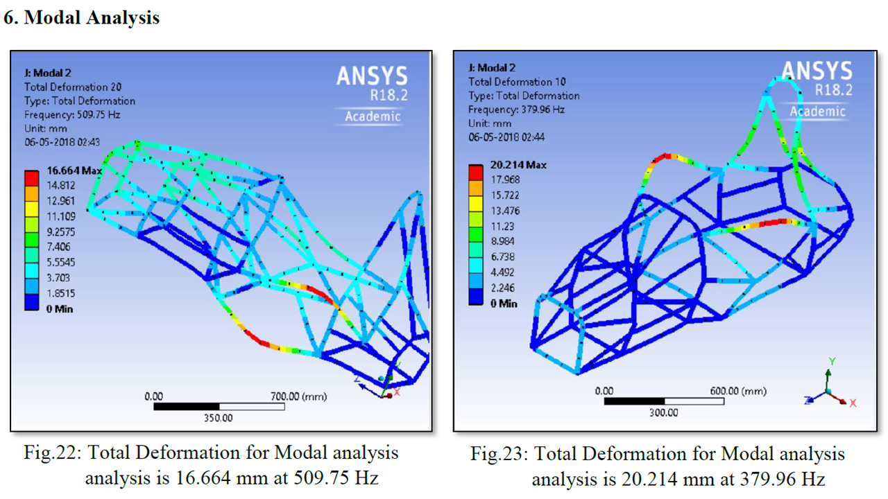
RELATED WORK:
To improve the overall design, we need to perform some additional tasks by scrutinizing the sections experiencing
high stress and deformation. One of the approaches could be submodeling.
Submodeling: In practical application, it gets impossible to mesh and analyse complex models due to limited time and
computing capacity. This problem can be accomplished with a process called submodeling in ANSYS Workbench. This tool could
be useful to get accurate results of some critical part affected by stress and deformation without running the whole model.
It utilizes two different models. The first one is a global model (coarse model) representing the entire structure with some
reasonable meshing. The local model, which is known as sub-model, includes the critical area of our interest with appropriate
mesh density which might not be possible in the full model. Different types of submodeling options are available in ANSYS.
As this project has a beam model, we will focus on Beam to Solid submodeling. Here the global model is entirely a beam element
model while the local model would be a solid model. In the figure below, we can see a section of global model which we would like
to study. A global model in the figure shows some of the analysed parts of our interest. We will consider a vertical tube
section where two pipes are making a V shape joint. The max deformation of that area was found to be 0.33346 mm which can
be seen in Figure 8. Now, to study the same area with some fine mesh to get the accurate results, we need to create a solid
sub-model. For better visualization, we can see sub-model part in figure below. This submodeling interpolates the boundary
conditions and deformation from the global model to the sub-model “cut boundaries” and solves for local stress states in
that region.
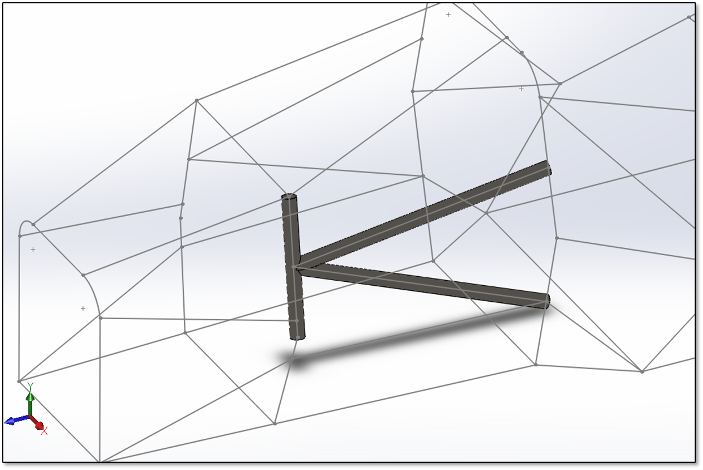
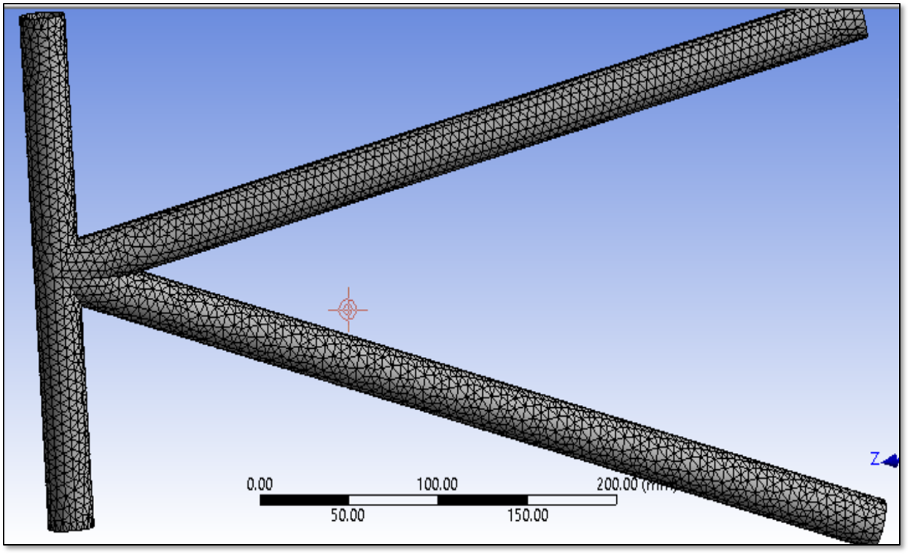
After the sub-model is ready, we need to make a new static structural analysis which will perform the analysis on the sub-model.
The important step here is to link the solutions of global model by the setup of sub-model static structural. Once the setup
is ready, we can import all the cut boundary condition from the global model. After solving that model, the max. total
deformation was calculated equal to 0.33509 mm which is similar to the global one with some more accuracy. The result
can be seen in Figure 10. This study focuses on sub modelling a specific part. It can be performed on any part in the
same manner.
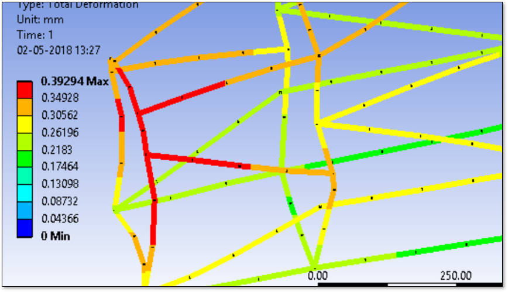
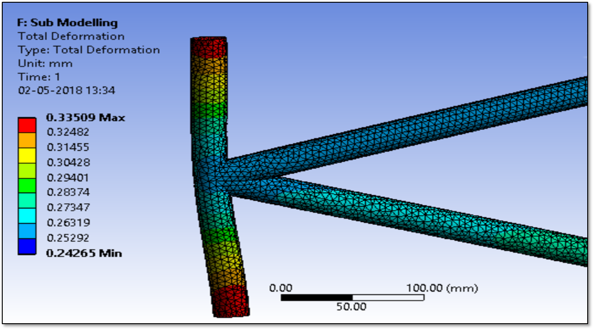
Optimization: After scrutinizing all the results of analysis, we found that the frame is slightly overdesigned.
Due to this, the weight of the frame became large which is not acceptable for the formula style vehicle. In this section,
we will see how we can optimize the design of the vehicle without compromising with the load bearing capacity. The best
approach for this is to be to look at the non-critical regions which are not much affected much after the forces are applied.
By checking the safety factor for that section, we can remove the unnecessary tubes and can simplify the design. If the removal
of parts is not possible, we can try assign different material and cross section to the tubes.
For the current chassis, we tried making some design modifications in the front and side sections. For the sections having some safe
regions, circular tubes having more thickness were replaced by the thin pipes. By doing several iterations, we were able to
achieve the weight reduction of 6 kg. This design can be validated by the applying the same amount of forces and checking the
stress values and safety factor. Apart from the weight reduction, we can also modify some regions to provide proper
triangulations of frames. The effectiveness of a space frame depends on its triangulation. As the size of the frame increase,
the space in between also increases which results in a decrease in structural rigidity of the frame. If we add a diagonal in
the orientation shown below, it increases the overall stiffness of the structure. This diagonal member now acts in tension as
the forces induced are trying to pull the diagonal from each end. The stiffness of this member acting in tension is higher
than the compared to the stiffness of the sides of the rectangular structure in bending. All the results of optimization can
be seen below.
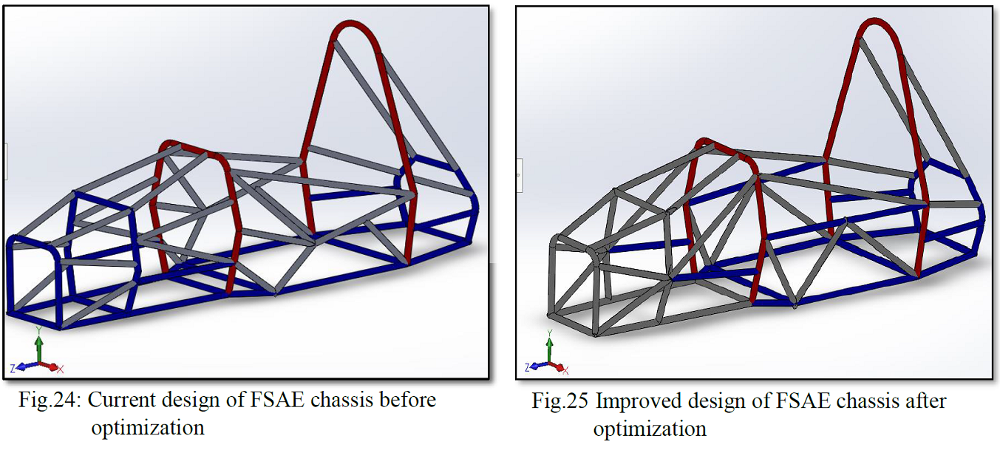
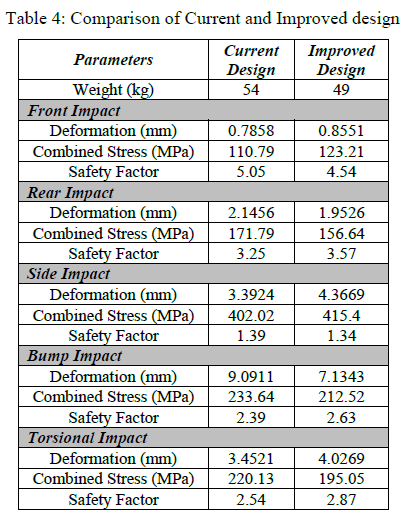